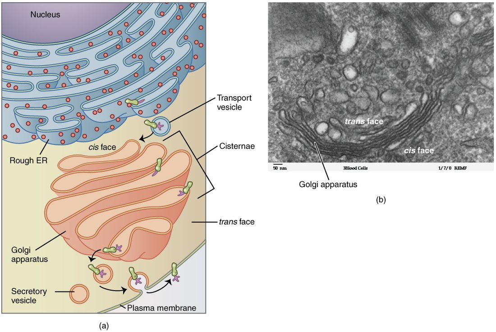
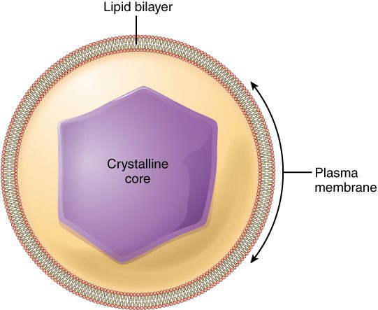
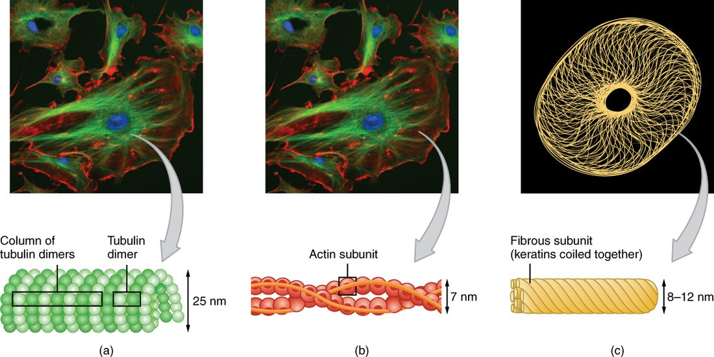

A factory inside every cell
Think of a cell in your pancreas that makes a digestive enzyme. In one minute it may build thousands of copies of the same protein, fold each one correctly, wrap them in membrane, stamp them with an address, and ship them to the cell surface. Separate internal workstations do each job. This page covers those workstations, the organelles and their functions, and the protein framework that holds them in place.
What an organelle is
In the last topic you learned that the cytoplasm is everything inside the plasma membrane except the nucleus. It has two parts:
- The cytosol (cyto- = cell, -sol = solution): the fluid part of the cytoplasm. It is water with dissolved ions, nutrients, enzymes and other proteins. Many of the cell's chemical reactions happen here.
- The organelles (organ + -elle = little, so "little organs"): structures in the cytoplasm, each with a specific job. Most are wrapped in their own membrane, which is a phospholipid bilayer like the plasma membrane.
A membrane around an organelle does the same thing the plasma membrane does for the whole cell: it keeps one fluid separate from another. That lets a cell run reactions side by side that would otherwise interfere with each other. Strong digestive enzymes, for example, stay locked inside one organelle, away from the proteins they would destroy in the cytosol. Figure 1 shows a generalized cell with its main organelles.

Some structures have no membrane: ribosomes, the cytoskeleton and centrioles. Most courses still count them as organelles because each has a specific structure and job. This page does too.
Ribosomes: where proteins are built
A ribosome (ribo- = from ribose, a sugar in its building material; -some = body) is a tiny particle made of two subunits of protein and nucleic acid. It has no membrane. Its one job is to build proteins: it links amino acids together, one at a time, in the order set by instructions copied from the nucleus.
Ribosomes work in two places:
- Free ribosomes float in the cytosol. The proteins they build stay in the cytosol, for example enzymes that break down glucose.
- Bound ribosomes sit on the outer surface of the rough endoplasmic reticulum. They make proteins that will end up in a membrane, in certain organelles, or outside the cell.
Free and bound ribosomes are the same kind of particle. Where a ribosome works depends on the protein it is making: a short signal at the start of some new proteins steers the ribosome to the endoplasmic reticulum.
The endoplasmic reticulum
The endoplasmic reticulum (ER) (endo- = within, -plasm = formed material, reticulum = little net) is a network of membrane sacs and tubes that winds through the cytoplasm. Its membrane is continuous with the membrane around the nucleus. The space inside its sacs is separate from the cytosol. There are two regions.
| Rough ER | Smooth ER | |
|---|---|---|
| Appearance | Flattened sacs studded with ribosomes, so it looks grainy | Branching tubes with no ribosomes, so it looks smooth |
| Main jobs | Receives new proteins from its ribosomes, folds them and adds sugar chains; makes proteins for membranes, lysosomes and export | Makes lipids, including phospholipids and steroids; breaks down some drugs and toxins; stores calcium ions |
| Abundant in | Cells that export a lot of protein, such as pancreas cells that make digestive enzymes | Liver cells (drug breakdown) and cells that make steroids, such as those in the testes and ovaries |
Here is a clinical example of the smooth ER responding to demand. A person who drinks alcohol heavily for weeks builds more smooth ER in the liver, with more of the enzymes that break alcohol and some drugs down. The same dose of some medicines then wears off faster.
Vesicles: the cell's shipping containers
A vesicle (vesica = bladder, -cle = small) is a small sphere of membrane that carries cargo inside the cell. A vesicle buds off one membrane, travels, and fuses with another. Because its wall is a bilayer, it can merge with any other bilayer, the way two soap bubbles merge into one. When a vesicle fuses with the plasma membrane, its contents end up outside the cell and its membrane becomes part of the plasma membrane.
The Golgi apparatus: sorting and shipping
The Golgi apparatus (named after Camillo Golgi, the Italian scientist who first described it; often just "the Golgi") is a stack of flattened, curved membrane sacs (Figure 2). One face receives vesicles from the ER. The opposite face sends vesicles out.
As proteins pass through the stack, the Golgi:
- modifies them, for example by trimming and adding to their sugar chains;
- sorts them by destination, using chemical tags they carry;
- packages them into vesicles addressed to the right place.

Vesicles leaving the Golgi go to one of three places: into the plasma membrane (new membrane proteins), out of the cell (for example, digestive enzymes), or to lysosomes (digestive enzymes kept inside the cell). Figure 3 shows the whole route.
Together, the membrane around the nucleus, the ER, the Golgi, vesicles, lysosomes and the plasma membrane form the endomembrane system (endo- = within). They are one connected system: membrane made in the ER moves by vesicle to the Golgi and on to the other members.
Lysosomes: digestion inside the cell
A lysosome (lysis = loosening or breaking apart, -some = body) is a membrane sac full of digestive enzymes. The enzymes work best in acid, at a pH of about 4.5 to 5. The lysosome membrane keeps its interior that acidic by moving hydrogen ions in. The cytosol is near pH 7.2, where these enzymes work poorly. That is a built-in safety feature: if a few enzymes leak out, they do little damage.
Lysosomes do two main jobs:
- Digest material taken into the cell, such as bacteria that a white blood cell has swallowed.
- Recycle the cell's own worn-out parts. This is autophagy (auto- = self, -phagy = eating). A membrane wraps an old organelle, the package fuses with a lysosome, and the parts are broken down into building blocks the cell reuses. Autophagy speeds up when a cell is starved of nutrients.
If lysosomes break open in large numbers, their enzymes digest the cell itself. That is autolysis (auto- = self, -lysis = breaking apart). It happens after cells die, which is one reason tissues break down after death.
Peroxisomes: oxidation and cleanup
A peroxisome (named for hydrogen peroxide, which it makes and destroys) is a small membrane sac of oxidizing enzymes (Figure 4). It is not part of the endomembrane system. Peroxisomes:
- break down very long fatty acids;
- break down some toxins, including part of the alcohol you drink, in liver and kidney cells.
Those oxidation reactions produce hydrogen peroxide (H2O2), which is harmful to the cell. An enzyme called catalase, packed into the same peroxisome, breaks it down to water and oxygen before it can escape.

Hydrogen peroxide is one of the reactive oxygen species: oxygen-containing molecules that react readily with proteins, lipids and nucleic acids and damage them. Some reactive oxygen species are free radicals: molecules with an unpaired electron, which grab an electron from whatever they touch and can start a chain of damage. Peroxisomes both make and destroy these molecules, and the cell's mitochondria produce them as a by-product too.
Mitochondria: converting fuel energy into ATP
A mitochondrion (mito- = thread, chondrion = granule; plural mitochondria) is a bean-shaped organelle with two membranes (Figure 5). The outer membrane is smooth. The inner membrane folds into shelves, called cristae, that greatly increase its surface area.
Mitochondria use oxygen to break down fuel molecules from food, and they capture the energy released by those oxidations as ATP. In most of your cells, mitochondria make the large majority of the ATP. The enzymes and protein complexes that do the work sit on the inner membrane and in the fluid it encloses, so more membrane folds mean more ATP production.
Structure follows demand. A contracting heart cell, which works nonstop, packs thousands of mitochondria, making up about a third of its volume. A mature red blood cell has none; it gets its ATP by breaking down glucose in the cytosol, which uses none of the oxygen it carries.
Mitochondria also have their own small ring of genetic material and divide on their own inside the cell. You inherit your mitochondria from your mother, because the egg supplies almost all of them.
The cytoskeleton: the cell's framework
The cytosol is not a loose soup with organelles drifting in it. A network of protein fibers, the cytoskeleton (cyto- = cell), runs through it. The cytoskeleton gives the cell its shape, holds organelles in place, provides tracks for moving cargo, and moves the cell or parts of it. It has three kinds of fiber (Figure 6).
| Microfilaments | Intermediate filaments | Microtubules | |
|---|---|---|---|
| Width | Thinnest, about 7 nm | Middle, about 10 nm | Thickest, about 25 nm |
| Made of | Two twisted strands of the protein actin | Tough, rope-like proteins; the kind differs by cell type | Hollow tubes built from the protein tubulin |
| Main jobs | Change cell shape; pinch a dividing cell in two; form the core of microvilli; with myosin, produce contraction | Resist pulling forces; anchor the nucleus; hold cells to their neighbors | Tracks for moving vesicles and organelles; pull apart the genetic material when a cell divides; form cilia and flagella |
| Stability | Built and taken apart quickly | Most permanent | Built and taken apart quickly |

Actin and myosin. Actin is the protein of microfilaments. Myosin is a motor protein: it grips an actin filament and uses the energy of ATP to pull on it. Every cell uses this pair to change shape and to crawl. Cells that contract for a living, such as those in your muscles and heart, are packed with actin and myosin; the muscle chapter covers that in detail.
Motor proteins on microtubules. Other motor proteins (kinesin and dynein) walk along microtubules, carrying vesicles and organelles. Each step uses one ATP. In the long extensions of cells in your spinal cord, which can be a meter long, this is how cargo made near the nucleus reaches the far end.
The centrosome. Microtubules grow outward from the centrosome (centr- = center, -some = body), a region near the nucleus. The centrosome contains a pair of centrioles (little centers): short cylinders, each made of nine sets of three microtubules, set at right angles to each other. When a cell divides, the centrosome helps organize the microtubules that separate the genetic material into the two new cells.
Cilia and flagella: structures that beat
Cilia (singular cilium, Latin for eyelash) are short, mobile projections of the cell surface. A cell may carry hundreds of them. Each cilium has a core of microtubules: nine pairs in a ring around two central ones. Dynein motors slide the pairs against each other, and the cilium bends. Cilia beat in coordinated waves, like a field of wheat in the wind, and move fluid across the cell surface. Two examples:
- Cells lining your trachea sweep a sticky layer of trapped dust and microbes up toward your throat.
- Cells lining the uterine tubes move an egg toward the uterus.
A flagellum (Latin for little whip) has the same microtubule core but is much longer, and a cell has only one. It moves the cell itself, not fluid past the cell. In humans the only flagellated cell is the sperm, which swims by whipping its flagellum.
Microvilli: more surface, no movement
Microvilli (micro- = small; singular microvillus) are tiny finger-like folds of the plasma membrane. Each is about 1 micrometer long, far shorter than a cilium, and has a core of actin microfilaments, not microtubules. Microvilli do not beat. They increase surface area.
Recall from the diffusion topic that the rate of diffusion rises with surface area. A cell lining your intestine carries thousands of microvilli on its exposed surface, which multiplies the area available for absorbing nutrients many times over. Under a light microscope, this dense fringe looks like the bristles of a brush, so it is called the brush border. Cells lining the kidney tubules have one too.
| Cilia | Flagellum | Microvilli | |
|---|---|---|---|
| Core | Microtubules (9 pairs + 2) | Microtubules (9 pairs + 2) | Actin microfilaments |
| Length | About 5 to 10 micrometers | About 50 micrometers in a sperm | About 1 micrometer |
| Number per cell | Up to a few hundred | One | Up to thousands |
| Moves? | Yes, beats in waves | Yes, whips | No |
| Job | Moves fluid across the cell surface | Moves the cell | Increases surface area for absorption |
Structure follows function
Most of your cells have the same set of organelles, but not in the same amounts. (A mature red blood cell is the big exception: it has lost its nucleus and nearly all its organelles.) Read a cell's organelles and you can predict its job. A cell full of rough ER and Golgi exports protein. A cell full of smooth ER makes lipids or breaks down drugs. A cell packed with mitochondria uses a lot of ATP. A cell with a brush border absorbs. A cell with hundreds of cilia moves fluid across its surface.